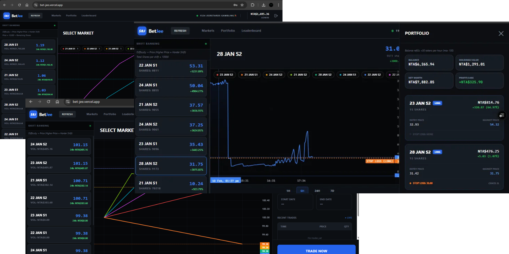
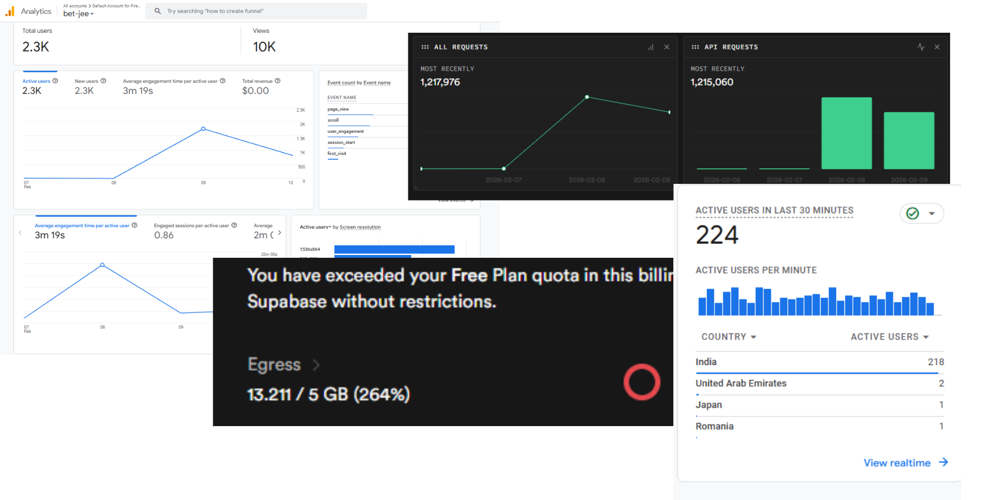

What 1.2M requests taught me about system design, mostly by breaking things.


It started as a meme. JEE runs across multiple days and shifts, the difficulty varies, and every student is convinced their shift was the hardest one (it’s a percentile exam, so of course they are). I posted a half-joke on r/JEENEETards and then thought: this is just a prediction market. The price of a shift is the crowd’s belief about how hard it was. So I built it over a weekend and called it BetJee.
Whatever I know about system design, I learned from this, and nearly all of it was because something fell over. This post covers both versions: betjee.js (the vanilla JS + Supabase prototype that went viral and died) and betjee.ts (the rewrite on Next.js + Cloudflare, which did not go viral and also had problems).
The gist, for the short attention spans
- v1 lasted 48 hours and took 1.2M requests, ~2.3k users, and about 200 people betting at any given moment.
- Egress hit 13.2 GB on a 5 GB free plan. That’s 264%, and it’s why I shut it down.
- Almost every fix I made created a harder problem than the one it solved.
- v2 answers most of v1’s problems properly. It also had its own, and I caused most of those by not reading code closely enough.
Will a linear curve work?
No. My first pricing model was , because it was the thing I could write in five minutes. It lasted until one account bought 500 shares, the price shot up linearly, and the liquidity was gone. There were around 800 bot accounts on that first model, all poking at it, so it’s hard to say how much was one whale and how much was a swarm. Either way the market was broken.
So I moved to a sigmoid bonding curve. Price rises slowly when demand is low, speeds up in the middle, and flattens near the cap:
and are a floor and a cap, is how steep the middle is, is where it’s steepest. I’d originally written that this made cornering the market “mathematically impossible”. That’s too strong. It makes it a lot more expensive, which is what I actually saw.
The pricing ran inside Postgres, in a handle_trade function, so the whole trade was one atomic thing. Execution price was the average of the price before and after the trade. That’s an approximation, and it’ll matter later.
What happens when two people buy the last 10 shares?
With ~200 trades a minute this wasn’t hypothetical. A plain SELECT then UPDATE means both of them read “10 left”, both buy, and you’re at -10 inventory. A double spend, in a game with fake money.
The fix was a row lock:
SELECT remaining_shares INTO v_remaining_shares
FROM markets
WHERE shift_id = p_shift_id FOR UPDATE;Everyone else trading that market waits until the transaction commits. It works. It also means every trade on a hot market is now in a queue.
Stop-losses were the next one. I couldn’t afford a background worker watching prices all day, so I did it inside the trade itself: after a trade moves the price, handle_trade checks the stop_losses table, and if a trigger is crossed it calls itself, recursively, in the same transaction. It meant stop-losses fired in the same transaction as the trade that triggered them. It also meant a trade could trigger a stop-loss that moves the price and triggers another one, and so on down.
The bots
Then the botnets came, because of course they did. They farmed the signup bonus and pushed prices around (there were Reddit posts calling out a “Harshad Mehta pump” and market boosting, so people noticed too).
My first defence was an ip_limits table in Postgres, basically a hand-rolled Redis, to rate-limit trades per IP. It slowed them down. It didn’t stop them. Banning an account just meant a new account, and worse, banning a bot that held 50% of a market froze all of its shares. The liquidity I was protecting was the thing the ban destroyed.
So I wrote wipeUserCompletely, in a Deno edge function, triggered by a heuristic (more than 3 accounts from one IP in under 15 seconds):
// Delete Positions (The "Burn")
// We delete the ownership record, but we DO NOT increment 'remaining_shares'
// in the markets table. The supply stays constricted.
await supa.from("positions").delete().in("user_id", usernames);It wipes the user, their history, and their positions, and deliberately doesn’t give the shares back to the pool. Burned. The price doesn’t crash and honest holders keep their value. I called it the “scorched earth” protocol.
“Realtime” that wasn’t
I wanted WebSockets. Supabase Realtime has a concurrent-connection limit on the free tier, and with 2,300+ users I was never going to fit under it. So the client asked for a delta, everything that changed since its last timestamp, every 3 seconds.
That’s stateless, simple, and it fits inside normal request quotas. It also turned into 1.2M API calls in 48 hours and 13 GB of egress. Polling feels cheap when you’re the only one testing it. At 200 people it isn’t cheap at all.
There was one more bug that nearly doesn’t deserve a section but taught me the most. To save server load I computed the 1.67% trade tax on the client in vanilla JS. Later I changed the sigmoid steepness in the SQL and forgot to update app.js. Users saw one price in the UI and executed at a slightly different one. The lesson is boring and correct: don’t duplicate business logic. Whatever holds the truth holds all of it.
Why I shut it down
Egress, and my 12th-grade boards. In that order, but not by much.
There’s a weird footnote. Someone made a subreddit, r/betjee, so I’d have somewhere to collect bug reports. It got to 30-odd active members quickly. I was deep in backend fires and Physics and couldn’t moderate it, and the person who created it removed me as a mod. As far as I know it’s now used for unrelated promotions. I built a community to talk about an algorithm and lost it to ads. Code you can fix with a commit; a community needs someone actually there.
So what would I do differently?
Looking back, what hurt comes down to four things:
- State was in the wrong place. A stateless server meant every client re-asking the database the same question every 3 seconds.
- Locks were doing the job that a single owner of the data should do.
- Rate limiting lived in a database table instead of somewhere fast.
- The pricing was an approximation I had defended with hand-waving.
That’s v2.
betjee.ts
The stack: Next.js on the front, Cloudflare Workers behind it, and Durable Objects holding the market state. A Durable Object is, as far as I understand it, one small piece of compute that owns its data and handles one thing at a time. It keeps WebSocket connections open to all the clients, and it’s the single source of truth for prices. No polling. A price changes, it pushes to everyone. The WebSocket Hibernation API lets it sleep while nothing is happening, which is how I planned to stay inside free-tier limits. I measured about 150 ms end to end.
This one move fixes three of the four problems above. Polling goes away because the server pushes. The FOR UPDATE lock is mostly replaced by there being one owner handling one request at a time (I haven’t stress-tested this, so take “mostly” seriously). And rate limiting moves into a botId -> lastTrade map inside the object, rather than Cloudflare KV, because KV is slow to propagate writes and a bot doesn’t wait for propagation. In-memory in the same object means check-and-set is one step.
The fourth, pricing, got the biggest rewrite. Each market (a Shift or a Mention) became an independent binary pool with its own liquidity parameter and quantity , priced with LMSR:
You’ll notice that looks a lot like the sigmoid I started with. It is the same shape. The difference, as I understand it, is that LMSR comes from a cost function, so what a trade costs is exact and doesn’t depend on my average-of-two-prices shortcut, and the house’s worst-case loss is bounded at per market. Prices go toward 0 or 1 and never get there. That bound is the thing I couldn’t give v1.
I also added algo trading, because why not. BetJeeScript is a small DSL: user code goes through acorn into an AST, and I audit the tree before it runs. for, while, fetch and window are rejected at the node level. No loops means execution time is bounded, and I’m fairly sure about that part. “No sandbox escapes” is a claim I can’t back up. I never had anyone seriously try.
On the front end, Zustand with sliced subscriptions, so a price change in Shift 3 only re-renders the Shift 3 row.
So did it work?
Partly. It never got anywhere near v1’s traffic. I was busy, the UI had become complicated (too complicated, I think), and the hype was already dead. A viral thing doesn’t wait for your rewrite.
And with a fraction of the reach, the Workers still went down. I hit Durable Object limits, and I think the honest reason is that a lot of the v2 code was written with AI help and I didn’t read or monitor it properly. I trusted it because it ran. That’s the opposite of everything v1 taught me, which is that the things that run fine at 5 users are exactly what die at 200. I knew it, I just didn’t apply it to code I hadn’t written myself.
So, was it worth it? v1 taught me what breaks. v2 taught me that knowing what breaks doesn’t help if you aren’t looking at the code. Both are worth having.
v1 schemas, policies and trade_rpc queries are on GitHub.